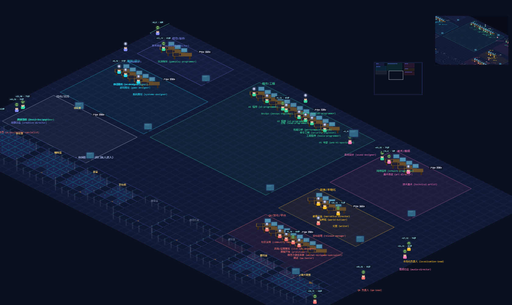
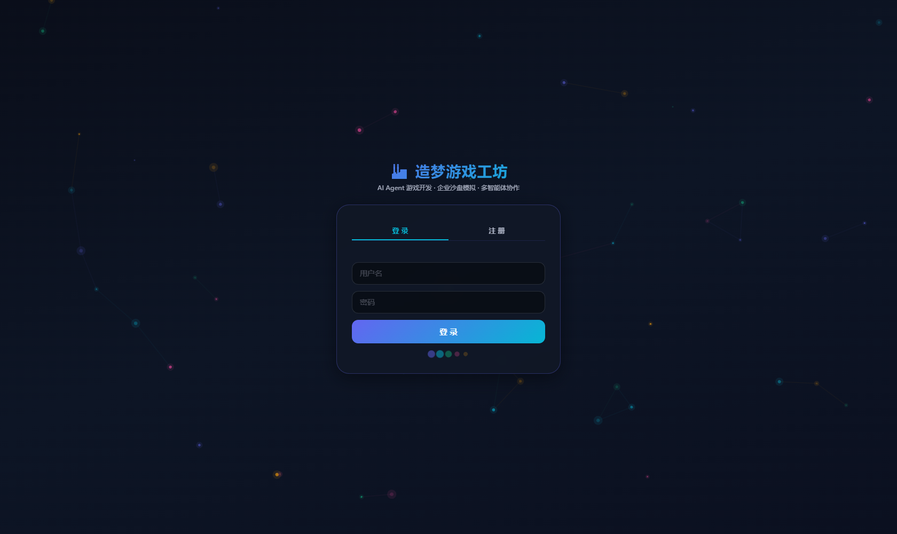
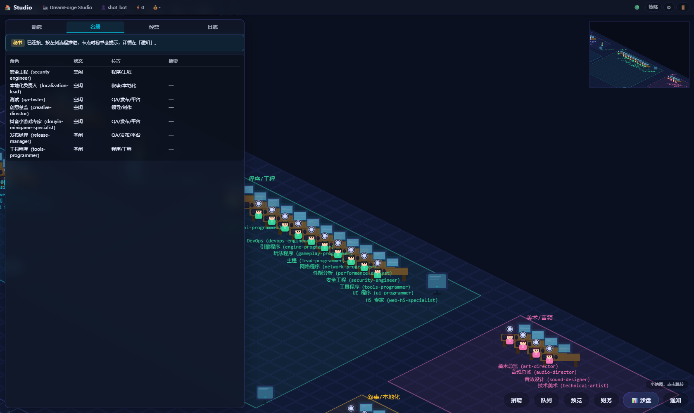
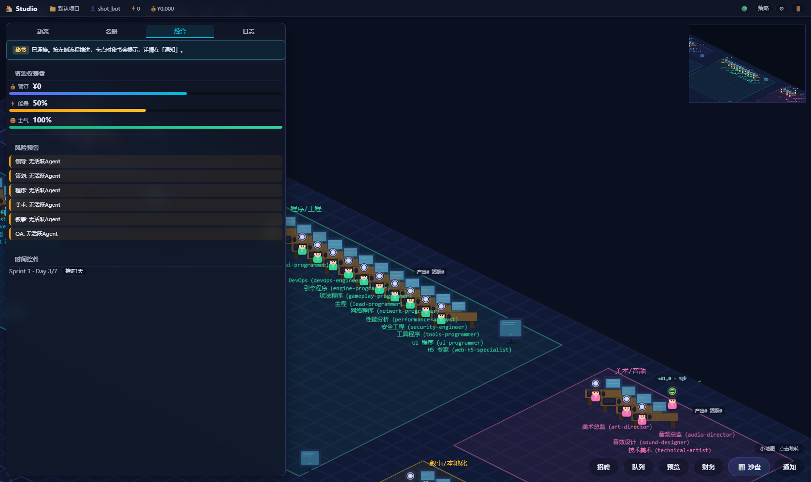
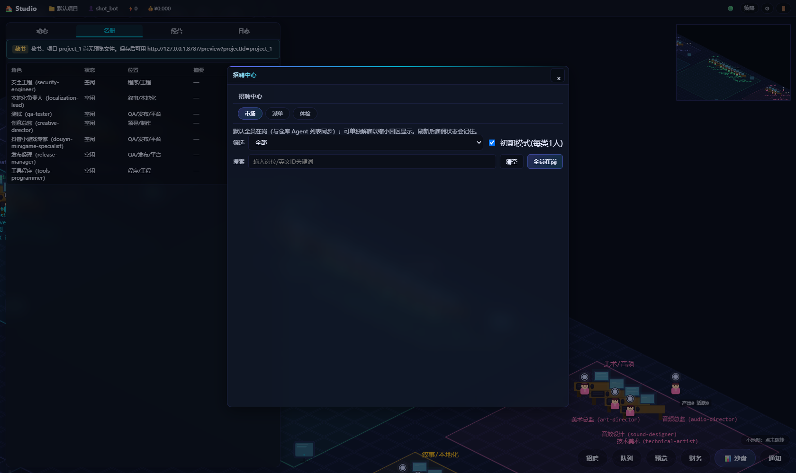
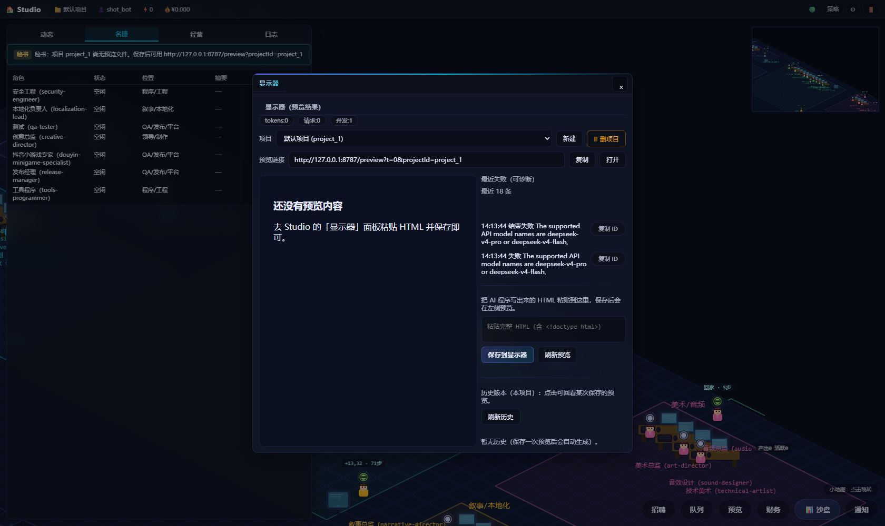
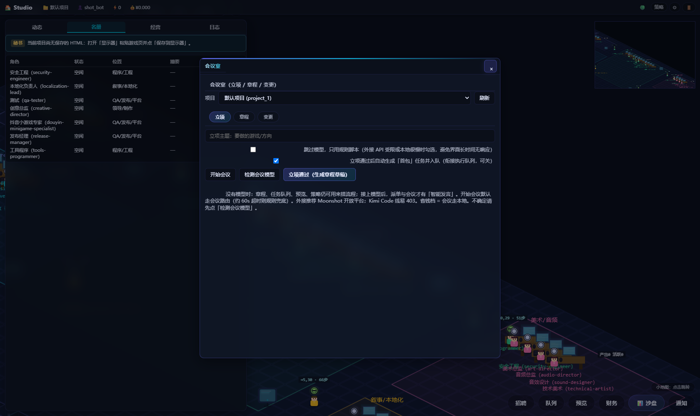
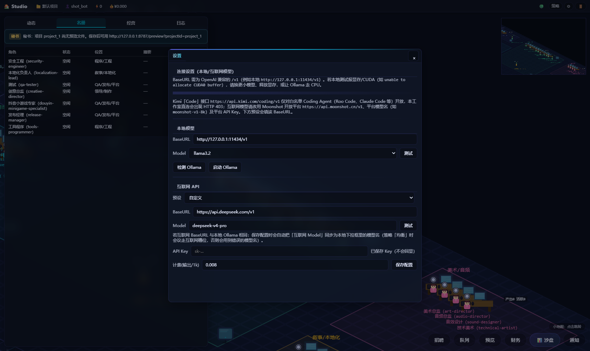

AI Agent Studio Orchestration
DreamForgeStudio
造梦游戏工坊
面向 HTML5 页游、微信小游戏 与 抖音小游戏 的 AI Agent 工作室编排平台。 把 7 个部门、约 40 个 Agent 接成一条可控流水线，再用一间等距办公室把它们的走动、排队、 交付和卡壳都摆在眼前。
Agent 通过 OpenAI 兼容 HTTP API 连接本地推理端点（Ollama / vLLM / LM Studio） 或云端模型；本地跑不动时自动外包到云端，云端太贵时自动退回本地。
等距办公室 · 4 工位 + 会议室 + 服务器机柜
这间办公室里有什么
7 个部门各有主题色与工位区域，Agent 会在工位、会议室与公共设施之间真实移动。
部门色直接取自前端 deptColorsShort 映射，不是配图时现编的。
办公室里还有 10 处公共设施，Agent 会自己去——这也是这间办公室最有性格的部分：
实际运行
下列均为本机 npm run dev 运行中的真实截屏（前端 5173 / 后端 8787），
1680×1000 视口、新建账号冷启动——没有摆拍数据：名册里的 38 个角色、
「最近失败」里的 18 条记录都直接来自运行时状态。点击任意一张可查看原图。

deptColorsShort 上色，Agent 在工位与公共设施之间走动；右上小地图可点击跳转视野，滚轮缩放、拖拽平移。







截图为 1680×1000 视口的无头 Chrome 实拍，页面同时提供 WebP（默认）与 PNG（原图）两版； 界面数据随本地数据库状态变化，与你的运行环境会不完全一致。
工作室能力
界面上每个抽屉面板对应一套已接入后端的真实能力，不是占位。以下按左侧菜单栏结构排列。
招聘中心
市场 / 派单 / 体检三页。「初期模式」每类只留 1 人压低负载，也可一键全员在岗；体检会跑粗测与阶梯扫描，输出设备画像与可执行建议。
会议室
立项 / 章程 / 变更三段。走会议模型生成章程草稿、里程碑与验收点；模型不可用时有规则兜底，偏离已归档章程会自动提醒。
沙盘看板
绩效排行 / 任务流水线 / 工作流 / 编排 / Sprint 五个视图。资源仪表盘同时盯预算、能量与士气三条线。
拖拽编排器
Agent 节点与工具节点（起点 / 条件分支 / 审批 / 终点）拖到画布上连线，保存即成为可执行流程。
三总监策略
制作人管拆单派单，技术总监管降级外包，创意总监管验收门禁。默认规则模式可玩可控，每人均可单独切到模型增强。
任务队列
优先级排序与并发槽位控制，HTML 产物自动校验失败重试。连锁派单按「策划 → 程序 → 美术 → QA」自动入队。
财务与计费
按 token 估算今日请求数、失败数、成本与提供方分布，含失败原因归类。成本口径目前为估算，待接上游 usage 后收窄。
资产管线
生图、打包 spritesheet、视频转码三条独立通路，产物写入显示器预览区；把 AI 写出的 HTML 粘进预览框即可留档并回看历史版本。
四阶段流水线
任务从立项落到四处工位，任一环节积压会被判定为瓶颈并高亮；delay 与排队情况在流水中实时写出。
Sprint 以 7 天为一周期推进，可以手动「推进 1 天」观察士气、预算与积压如何随时间变化。
美术 / 音频是最常见的积压点——贴图与转码串行排队时，后段 QA 会空转。
模型路由
三档路由决定「执行」和「会议」分别花谁的钱。三个总监派单时走会议侧，招聘卡片上的个体绑定可以覆盖全局档位。
- 执行：本地
- 会议：本地
- 零 API 成本，速度取决于本机
- 执行：本地
- 会议：云端
- 干活用本机，决策用云端
- 执行：云端
- 会议：云端
- 全链路云端，成本最高
支持 DeepSeek、Moonshot、MiniMax 预设与本地 Ollama；也能直接填任意 OpenAI 兼容的 BaseURL。
数据怎么流
浏览器里的等距办公室是只读视图，真实状态在服务端；两侧靠一条 WebSocket 事件流同步，断线自动重连。
跑起来
需要 Node.js 18 及以上。根 workspace 会同时拉起前后端两个进程。
# 安装依赖（npm workspaces 会一并处理 apps/* 与 packages/*）
npm install
# 同时启动 server(8787) 与 web(5173)
npm run dev
# 只起一端时用
npm run dev:server
npm run dev:web
# 端到端冒烟：任务队列 + 派单 + 回退链路自检
npm run check:studio-e2e首次打开建议先进连接设置填 BaseURL 与模型名，点「测试」确认通；本地报显存不足时换成更小模型或让 Ollama 走 CPU。
技术栈
- 前端
- TypeScript 5.8 · Vite 6 · Phaser 3.90
- 后端
- Node.js HTTP + WebSocket · tsx
- 持久化
- better-sqlite3 · 12 张表 · JSON 自动迁移备份
- 模型接入
- OpenAI 兼容 HTTP API 代理
- 认证
- 注册 / 登录 · SHA256 口令 · Bearer Token
- 实时
- WebSocket 事件流 · 断线自动重连
- 媒体
- sharp（图像处理）· spritesheet 打包 · 转码
- 角色来源
- 上游 Claude Code Game Studios 快照，已裁剪通用引擎 Agent 并增补平台专家
- 规范驱动
- openspec（changes / specs），变更先提案后落地
- 共享类型
- packages/shared · studio-events（前后端同一份事件定义）
- 包管理
- npm workspaces · apps/* 与 packages/*
- 许可
- 见仓库根目录 LICENSE
仓库结构
npm workspaces 单仓多包，共享类型放在 packages/shared。